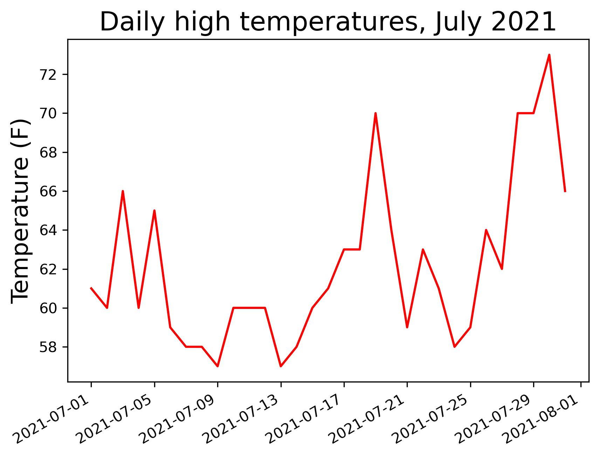
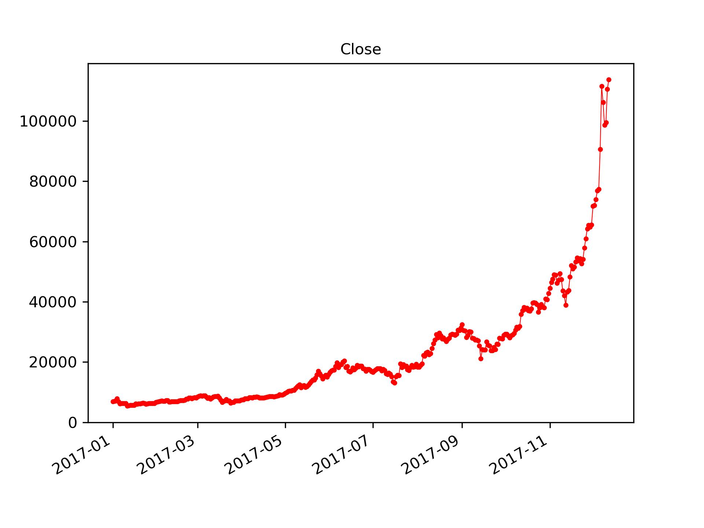
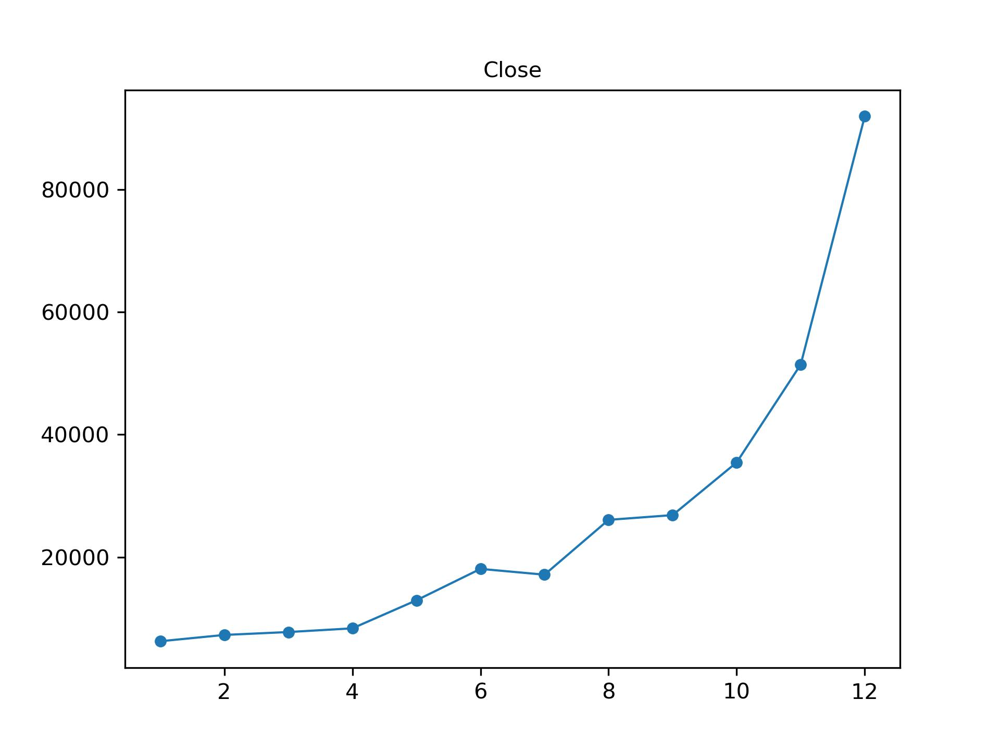

Python Programming
Lecture 12 Downloading Data
12.1 Downloading Data (1)
- csv包 (教材使用): 主要用于逐行读取和写入 CSV 文件，更偏向基础文件处理。
- pandas: 能读取 CSV 文件，还提供筛选、统计、分组、缺失值处理，更适合完整的数据分析工作流。
import pandas as pd
df = pd.read_csv('sitka_weather_07-2021_simple.csv')
df.index
RangeIndex(start=0, stop=31, step=1)
df.columns
Index(['STATION', 'NAME', 'DATE', 'TAVG', 'TMAX', 'TMIN'], dtype='object')
df.head()
STATION NAME DATE TAVG TMAX TMIN
0 USW00025333 SITKA AIRPORT, AK US 2021-07-01 NaN 61 53
1 USW00025333 SITKA AIRPORT, AK US 2021-07-02 NaN 60 52
2 USW00025333 SITKA AIRPORT, AK US 2021-07-03 NaN 66 54
3 USW00025333 SITKA AIRPORT, AK US 2021-07-04 NaN 60 55
4 USW00025333 SITKA AIRPORT, AK US 2021-07-05 NaN 65 55
Extracting and Reading Data
df["TMAX"]
0 61
1 60
...
29 73
30 66
Name: TMAX, dtype: int64
df.loc[0]
STATION USW00025333
NAME SITKA AIRPORT, AK US
DATE 2021-07-01
TAVG NaN
TMAX 61
TMIN 53
Name: 0, dtype: object
df.loc[:,'TAVG':'TMAX'] #查看连续多列
df.loc[:,['TAVG','TMAX']] #查看特定多列
df.loc[2:4,:] # 查看连续多行 不是左闭右开
df.loc[[2,4],:] # 查看特定多行
Modify Data
# calculation
df.loc[:, 'difference'] = df["TMAX"] - df["TMIN"]
# example
df.loc[:, 'x'] = 1
df.loc[:, 'y'] = range(31)
Delete Data
# 删除返回值
df_x = df.drop('difference', axis = 1) # 删除单列
df_y = df.drop(1, axis = 0) # 删除单行
Filter Data
df_60 = df[df["TMAX"] >= 60]
from matplotlib import pyplot as plt
# Plot the high temperatures.
fig, ax = plt.subplots()
ax.plot(df["TMAX"], c='red')
# Format plot.
ax.set_title("Daily high temperatures, July 2021", fontsize=24)
ax.set_xlabel('', fontsize=16)
ax.set_ylabel("Temperature (F)", fontsize=16)
ax.tick_params(labelsize=16)
plt.savefig('simple.jpg',bbox_inches='tight',dpi=300)

datetime
# convert string to time format
df.loc[:,'date'] = pd.to_datetime(df['DATE'])
first_date = pd.to_datetime('2021-7-1',format = '%Y-%m-%d')
%A Weekday name, such as Monday; %B Month name, such as January;
%m Month, as a number (01 to 12)
%d Day of the month, as a number (01 to 31)
%Y Four-digit year, such as 2015; %y Two-digit year, such as 15
%M Minutes (00 to 59); %S Seconds (00 to 61)
# filtering data by date
df_t = df[(df['date']>="20210715") & (df['date']<="20210720")]
df_t
14 USW00025333 SITKA AIRPORT, AK US 2021-07-15 NaN 60 50 2021-07-15
...
19 USW00025333 SITKA AIRPORT, AK US 2021-07-20 NaN 64 56 2021-07-20
# calculate periods
periods = df.loc[20, "date"] - df.loc[1, "date"]
periods.days
19
df.loc[:,'date'] = pd.to_datetime(df['DATE'])
fig, ax = plt.subplots()
ax.plot(df["date"], df["TMAX"], c='red')
ax.set_title("Daily high temperatures, July 2021", fontsize=18)
ax.set_xlabel('', fontsize=16)
fig.autofmt_xdate()
ax.set_ylabel("Temperature (F)", fontsize=16)
ax.tick_params(labelsize=10)
plt.savefig('simple.jpg',bbox_inches='tight',dpi=300)

import pandas as pd
df = pd.read_csv('sitka_weather_2021_simple.csv')
df.loc[:,'date'] = pd.to_datetime(df['DATE'])
# Plot data.
fig, ax = plt.subplots()
ax.plot(df["date"], df["TMAX"], c='red', alpha=0.5)
ax.plot(df["date"], df["TMIN"], c='blue', alpha=0.5)
ax.fill_between(df["date"], df["TMAX"], df["TMIN"], facecolor='blue', alpha=0.1)
# Format plot.
ax.set_title("Daily high and low temperatures - 2021", fontsize=18)
ax.set_xlabel('', fontsize=16)
fig.autofmt_xdate()
ax.set_ylabel("Temperature (F)", fontsize=16)
ax.tick_params(labelsize=10)
plt.savefig('simple.jpg',bbox_inches='tight',dpi=300)

Handling Missing Data
import pandas as pd
from matplotlib import pyplot as plt
frame = pd.read_csv('death_valley_2021_simple.csv')
frame.info()
RangeIndex: 365 entries, 0 to 364
Data columns (total 6 columns):
# Column Non-Null Count Dtype
--- ------ -------------- -----
0 STATION 365 non-null object
1 NAME 365 non-null object
2 DATE 365 non-null object
3 TMAX 364 non-null float64
4 TMIN 365 non-null int64
5 TOBS 360 non-null float64
dtypes: float64(2), int64(1), object(3)
memory usage: 17.2+ KB
frame[frame["TMAX"].isna()]
123 USC00042319 DEATH VALLEY NATIONAL PARK, CA US 2021-05-04 NaN 72 89.0
frame_DT = frame[["DATE", "TMAX", "TMIN"]]
frame_cleaned = frame_DT.dropna()
frame_cleaned.info()
Index: 364 entries, 0 to 364
Data columns (total 3 columns):
# Column Non-Null Count Dtype
--- ------ -------------- -----
0 DATE 364 non-null object
1 TMAX 364 non-null float64
2 TMIN 364 non-null int64
dtypes: float64(1), int64(1), object(1)
memory usage: 11.4+ KB

12.2 Downloading Data (2)
.JSON
from pathlib import Path
import pandas as pd
import json
path = Path('btc_close_2017.json')
contents = path.read_text()
btc_data = json.loads(contents)
date = [];close=[]; months=[]
for btc_dict in btc_data:
months.append(int(btc_dict['month']))
close.append(float(btc_dict['close']))
date.append(btc_dict['date'])
df = pd.DataFrame({"close": close, "months": months, "date": date})
df.loc[:,'date'] = pd.to_datetime(df['date'])
import matplotlib.pyplot as plt
fig, ax = plt.subplots()
ax.plot(df['date'],df['close'], linewidth=0.5, c='red')
ax.scatter(date,close, s=5, c='red')
ax.set_title('Close',fontsize=10)
fig.autofmt_xdate()
plt.savefig('close.jpg',dpi=300)

monthly_avg = df.groupby('months')['close'].mean()
# mean(), sum(), max(), min(), std()
def f(arr):
return arr.max()-arr.min()
monthly_avg = df.groupby('months')['close'].apply(f)
monthly_avg = df.groupby('months')['close'].mean()
monthly_avg
months
1 6285.870968
2 7315.714286
...
11 51436.166667
12 91936.416667
Name: close, dtype: float64
import matplotlib.pyplot as plt
fig, ax = plt.subplots()
ax.plot(monthly_avg.index, monthly_avg.values, linewidth=1)
ax.scatter(monthly_avg.index, monthly_avg.values, s=20)
ax.set_title('Close',fontsize=10)
plt.savefig('monthly_avg.jpg',dpi=300)

Exercise: 人口数据可视化
- 现在有3个JSON文件，分别统计了中国，印度和美国1960-2024年的人口数量
- 绘制一幅折线图，描述任一个国家的人口走势，你可以参考刚刚学过的代码
from pathlib import Path
import pandas as pd
import json
path = Path('btc_close_2017.json')
contents = path.read_text()
btc_data = json.loads(contents)
date = [];close=[]; months=[]
for btc_dict in btc_data:
months.append(int(btc_dict['month']))
close.append(float(btc_dict['close']))
date.append(btc_dict['date'])
df = pd.DataFrame({"close": close, "months": months, "date": date})
df.loc[:,'date'] = pd.to_datetime(df['date'])
import matplotlib.pyplot as plt
fig, ax = plt.subplots()
ax.plot(df['date'],df['close'], linewidth=0.5, c='red')
fig.autofmt_xdate()
plt.savefig('close.jpg',dpi=300)
Data Combine
df_C
date pop
0 2024 1408975000
1 2023 1410710000
... ... ...
63 1961 660330000
64 1960 667070000
df_I
date pop
0 2024 1408975000
1 2023 1410710000
... ... ...
63 1961 446564729
64 1960 435990338
df_wide=pd.merge(df_C,df_I,on='date',\
suffixes=["_C","_I"])
df_wide
date pop_C pop_I
0 2024 1408975000 1450935791
... ... ... ...
63 1961 660330000 446564729
64 1960 667070000 435990338
df_long = pd.concat([df_C, df_I], \
ignore_index=True)
df_long
date pop
0 2024 1408975000
... ... ...
128 1961 446564729
129 1960 435990338
12.3 AI辅助编程

GitHub Copilot官网
尽管 ChatGPT或者Deepseek 可以编写完整的代码，但是要与集成开发环境（Integrated Development Environment，IDE）无缝对按，使用ChatGPT 就不太方便了，尤其是在生成片段代码时，如补全一个函数的定义、补全某个语句等，在这种情况下，使用GitHub Copilot 是一个非常好的选择。当然，最好是将 ChatGPT 与 GitHub Copilot一起使用：使用 ChatGPT 生成一个完整的解决方案，并使用 GitHub Copilot 对这个解决方案进行微调。
- 安装VScode参考配置 参考配置（VScode是什么？常用IDE有哪些？）
- 注册GitHub账户；3. 在VScode里面安装GitHub Copilot插件。

功能介绍
1. 自动补全注释（按Tab键）
# 编写一个程序，读取文件夹中的文件
2. 根据函数名自动生成代码（按Tab键）
def bubblesort()
3. 生成测试用例（在bubblesort函数下方输入）
#测试bubblesort函数
4. 逐步代码生成
#定义5个列表变量，每个列表包含2到10个元素
#将5个列表合并，再调用bubblesort函数对列表排序
5. 自动生成语句架构
for i
-if
6. 生成多个候选解决方案
如果使用Tab键生成解决方案，那么对于一些复杂的代码，可能需要一行一行地生成（需要不断地按 Enter 键和 Tab 键），比较麻烦。GitHub Copilot 提供了生成多个候选解决方案的功能，具体的做法就是在注释中按 Ctrl + Enter 组合键，这将显示一个新的选项卡，默认会自动生成10个解决方案。(有时候还不如直接ChatGPT或者Deepseek)
#用Flask实现一个服务端程序，只支持GET请求，请求的参数是一个字符串，返回一个字符串。
7. 检查代码漏洞
# 检查上面的代码是否有漏洞
一句话就是：写注释，然后enter和tab来回的按。
GitHub Copilot的免费平替CodeGeeX
提示词的编写技巧
- 给AI工具指定一个角色：第一句“你是pandas专家”
- 交代背景：给出文件的路径，以及文件中变量的名称，行列信息
- 说明问题：解决什么问题，必要时说明用什么方法解决，以及指定输出内容，形式和格式
- 必要时给出示例：帮助AI工具理解意图
注意事项
- 提倡用短句，用专用词指定对象，避免使用“它”和“前面”等词
- 明确指定输出内容，可以是全部数据，也可以是一部分
- 指定输出的数据格式，输出文件的路径和名称，甚至编码
Example: Impact of Ai on Students
Kaggle project description, AI impact数据下载你是pandas专家，文件路径为“/Users/wangwanglulu/Downloads/ai_student_impact_dataset.csv”。使用pandas导入该文件，根据Perceived_AI_Dependency和Anxiety_Level_During_Exams两列来绘制折线图。保存图片到jpg文件dpi为300，为代码添加注释。
目前几款主流AI编程工具
-
人在编程，AI安静地在旁边提示 + 补代码
- Copilot：可能需要魔法，价格较低，主要在 VSCode 中使用。国内平替：CodeGeeX
- Copilot 也在持续进化，已经开始加入 Agent 功能 人和 AI 协同编程，AI 深度参与工程开发
- Cursor: 需要魔法，价格中等偏贵，独立IDE。国内平替：Trae.ai国内版 AI 可自主完成开发任务，人负责描述需求与审核结果
- Claude Code (命令行)/Codex: 需要魔法，价格较高，对命令行与工程环境要求较高
推荐学生党使用：
- VSCode + Copilot/CodeGeeX + 国内免费大模型
- Trae.ai 国内版（更适合新手）
- 不差钱不会命令行：Cursor
- 不差钱且熟悉命令行：Claude Code
Summary
- Downloading Data
- Reading: Python Crash Course, Chapter 16